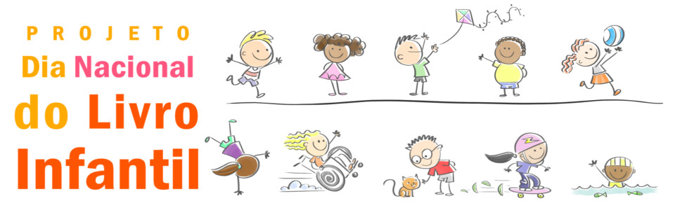

Bem-vindo ao projeto Dia Nacional do Livro Infantil
No dia 18 de Abril, dia de nascimento do escritor Monteiro Lobato, é comemorado o Dia Nacional do Livro Infantil. Nesta data, será lançada a 4ª Edição do Projeto Dia Nacional do Livro Infantil (DNLI4). A ação fomenta o hábito da leitura e contribui para a formação de leitores já na fase de alfabetização.
Antes de continuar, verifique no quadro abaixo se você já curtiu a nossa página. Se ainda não curtiu, não deixe de fazê-lo para que possa receber todas as atualizações do nosso projeto.
Iniciado em 2016, o projeto DNLI tem apoiado escolas na organização de ações especiais voltadas a alunos da pré-escola e séries iniciais para o desenvolvimento do hábito da leitura. Além de incentivar atividades como rodas de leitura, leitura compartilhada, contação de histórias e teatro, a principal estratégia do projeto consiste na utilização de livros personalizados. Os livros personalizados permitem que a própria criança se torne parte da história, reconheça o seu nome e se identifique como um personagem, com suas características próprias e dentro de um contexto ligado à sua realidade.
Os livros personalizados permitem que a própria criança se torne parte da história, reconheça o seu nome e se identifique como um personagem, com suas características próprias e dentro de um contexto ligado à sua realidade.
As histórias personalizadas, além de complementarem atividades de alfabetização envolvendo o reconhecimento do próprio nome, dos colegas, familiares ou mesmo identificação de palavras favoritas, também funcionam como um elemento de atração e motivação. Quando as crianças identificam o seu nome na história, elas ficam mais interessadas pela leitura.
A equipe envolvida no projeto DNLI viabilizou, nestes três anos de projeto, a impressão de livros personalizados, entregues pelos professores aos alunos das escolas beneficiadas.
A última ação do projeto aconteceu em dezembro de 2018 na Escola Municipal Raul Gelbeck. As crianças participaram de entrevistas, bate-papo com o autor e contação de histórias. Ao final das atividades os alunos do primeiro ano receberam de presente o livro personalizado O Nome da Gente.
Nesta 4ª edição, o projeto mantém a proposta de incentivar os professores a usarem livros com histórias personalizadas. Entretanto, estabeleceu uma meta ousada: promover a autonomia tecnológica do professor para a construção e geração de livros personalizados. Para atingir este objetivo, a equipe do projeto trabalhou para viabilizar que o próprio educador seja capaz de construir e publicar um livro personalizado. Este livro poderá ser usado pelos alunos na sua forma digital ou impressa. Poderá conter uma história de autoria do próprio professor, dos seus alunos ou de autores parceiros do projeto.
A capacitação dos professores será feita por meio do curso online Construindo livros personalizados. Neste curso, os educadores que trabalham com alunos em fase de alfabetização aprenderão as ferramentas tecnológicas que permitem criar e gerar livros com histórias personalizadas. Como principal ação da 4ª edição do DNLI serão distribuídos vouchers para que professores de escolas públicas possam participar gratuitamente deste curso online.
Além do curso gratuito, o projeto DNLI4 vai sortear, entre os professores que concluírem a capacitação, um crédito que permitirá a impressão de um lote de livros personalizados em uma gráfica digital. A logística da gráfica e o envio dos livros impressos para a escola ficará a cargo da equipe DNLI4.
Convidamos todos os visitantes deste site a participar deste projeto de incentivo à leitura. Afinal, o hábito de ler traz inúmeros benefícios para os alunos. A criança que lê tem mais facilidade para aprender, pronuncia melhor as palavras e se comunica melhor. Por meio da leitura ela desenvolve a criatividade, desperta a imaginação e adquire repertório, cultura e conhecimento. Leia abaixo como você pode participar do DNLI4!
Se você se identifica com essa proposta e quer ver um Brasil de leitores, divulgue este projeto em suas redes sociais. Preparamos este link para você compartilha-lo no Facebook.
Você, professor alfabetizador, pode se inscrever no formulário apontado por este link. Todos professores da rede pública e privada de ensino podem participar. Porém, o projeto, inicialmente, realizará o sorteio de 20 vouchers para participação gratuita no curso de personalização de livros para os professores das escolas públicas. Caso os organizadores do DNLI4 estabeleçam novas parcerias de apoio ao projeto, novos vouchers poderão ser disponibilizados.
Se você é um autor de livro infantil, compartilhe um dos seus livros ou escreva uma história especialmente para o projeto. Esta história fará parte de um banco de livros online e gratuito que ficará disponível para personalização e uso dos professores com seus alunos.
Você ilustrador também pode participar. Entre em contato e escolha uma história para ilustrar e personalizar. A sua ilustração vai colaborar na construção do banco de livros online e gratuito que será colocado à disposição dos professores.
Aqui temos um convite para que a sua empresa apoie financeiramente o projeto. Adquirindo uma cota de apoio, ampliaremos o número de vouchers e livros impressos que serão oferecidos aos professores que concluírem a capacitação.
Ler para uma criança fortalece o vínculo com ela, estimula a imaginação e colabora com o seu desenvolvimento. Escolha um projeto e seja um voluntário. Projetos como o Myra promovem encontros de leitura em que o você participa lendo com uma criança.
1 Reading personalized books with preschool children enhances their word acquisition. Natalia Kucirkova, David Messer, Kieron Sheehy.
Design: HTML5 UP.{kind=link}
{kind=link}
{kind=link}
{kind=link}